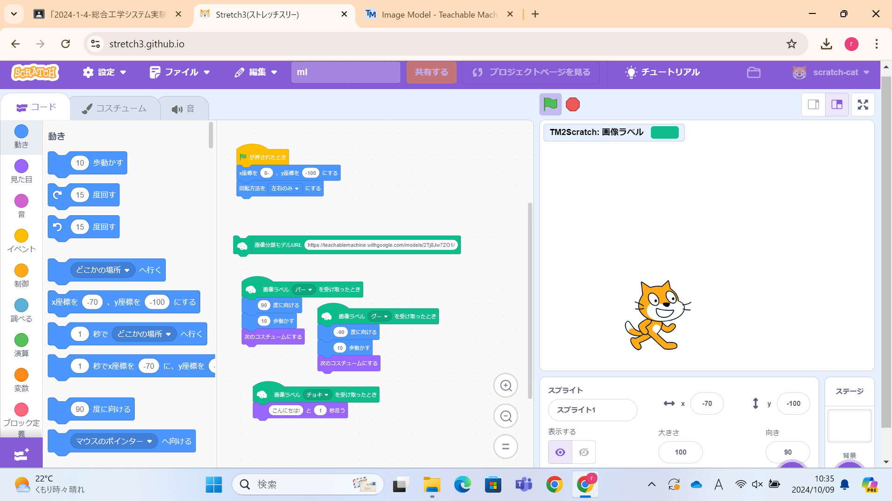
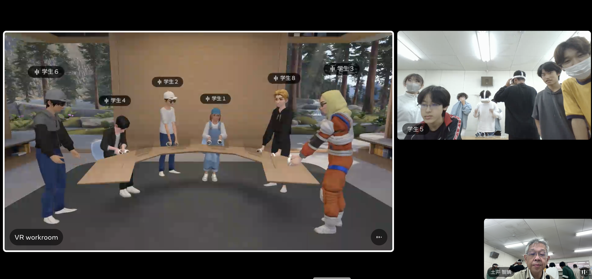
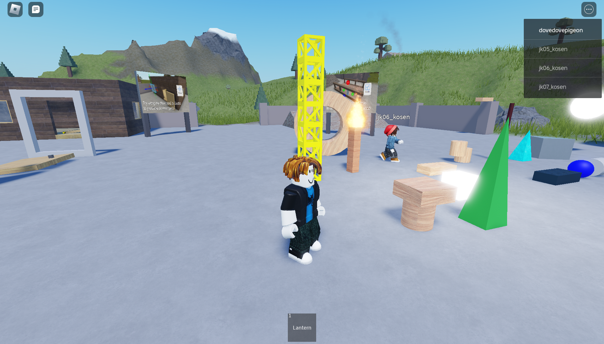

第2週目
2-1 2週目のレポートをHTMLで作る
1.内容
＜br＞や＜html＞はタグと言い、タグとはテキストに意味を与えるためのもの。例として＜br＞は文章の改行、
＜button＞はボタンの作成、＜p＞は段落の作成などがあり、これらがhtmlを構成している。
2.感想
htmlを使うことは初めてだったが、すごく直感的でわかりやすかった。これを機に他のマークアップ言語を触って
みたい。
3. 2週目が完成した人は1週目のレポートも完成させる
2-2 機械学習体験

1.内容
最近の生成型AIまでの概要について東京大学の松尾豊教授のYouTube動画を視聴したのちに、TeachableMachine
という簡単に機械学習モデルを作成できるウェブベースのツール環境を使って、グーチョキパーを判別する機械
学習モデルを作成し、リアルタイム分類される様子を体験した。さらにその機能をスクラッチに組み込むことが
できることを確認した。機械学習(MachineLearning)とは
2.感想
松尾先生の説明についても記述する
2-3 VR（バーチャルリアリティー：Virtual Reality）会議室の体験


1.内容
ないようないよう
2.感想
かんそうかんそう